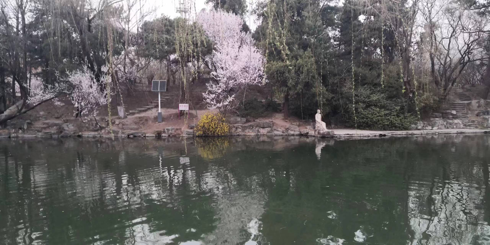
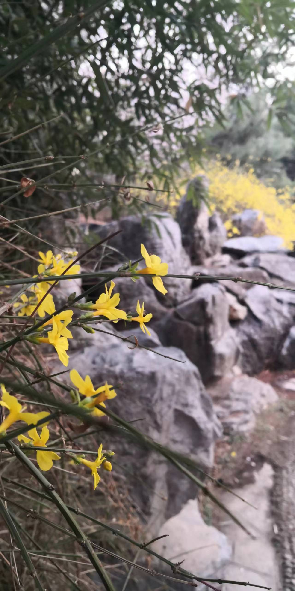
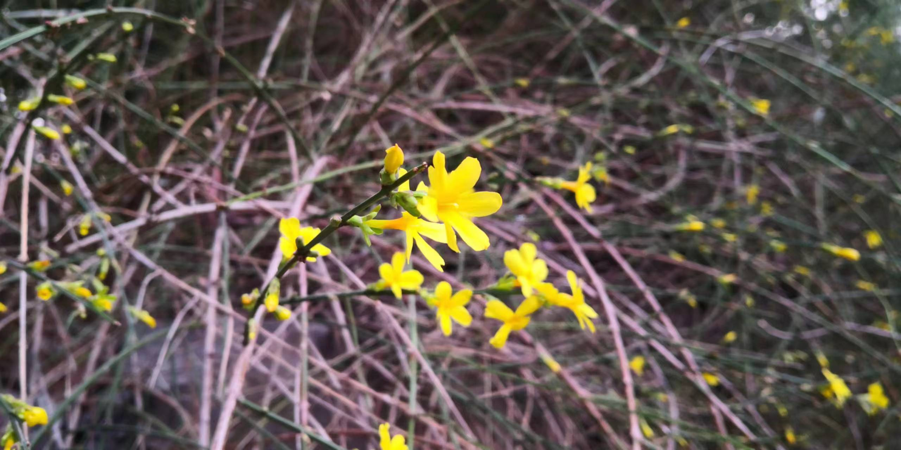

日记日记，现在变成周记了，恍惚之间回到了小学六年级，那时候我们也写周记，写的还很认真。关于小学的记忆的确不是很多了，但是我想我始终记得那个夏天。那是2015年的4月左右，当时应该是自习吧，抬头发现教室外面的树映在教室墙壁的瓷砖上，瓷砖是白色的六边形的马赛克砖，这样看上去就像一些深浅不一的绿色六边形拼成了一整块，那是一种触及灵魂的颜色，以至于我一想起来就能回忆起一些盛夏的时光。
蝉鸣文学的确好笑，但是不得不说那是我们关于夏天的共同记忆。不知从何时起，我的回忆都带上了一些滤镜，玫瑰色的、浅黄的、 golden days 的，很有趣，但也有些伤感。不说了，再说又要陷进去出不来了。
这周我干了啥，和以前一样，在六教呆上一整天，学电。有什么可说的呢？对了，昨天我第一次看见了沙尘暴，天空很黄，能见度很低，让人窒息。校园里开了不少花，上一个春天我还戴着口罩呢😂，现在桃花、迎春花、连翘争相开放，但是桃花的味道不是很好闻。



总之很好看啦，😍
没啥了，我要放松一下，明天还有很重的任务呢。